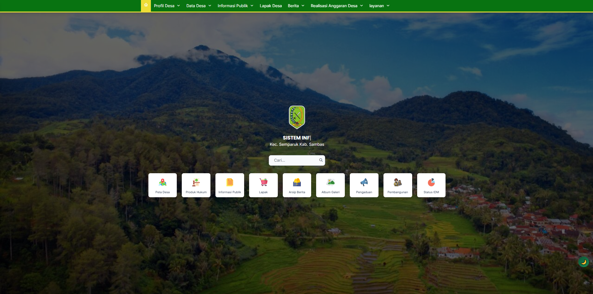

Website Resmi Desa Sepadu Telah Diluncurkan

Pemerintah Desa Sepadu dengan bangga mempersembahkan website resmi desa yang baru. Website ini dibangun sebagai sarana komunikasi dan informasi yang lebih baik dengan masyarakat desa maupun masyarakat umum.
Tujuan Pembangunan Website
Pembangunan website desa memiliki beberapa tujuan strategis:
- Meningkatkan transparansi pemerintahan desa
- Memberikan informasi lengkap tentang pelayanan publik
- Mempromosikan UMKM dan produk lokal desa
- Meningkatkan engagement dengan masyarakat
- Menyediakan jadwal sholat dan informasi keagamaan
Fitur-Fitur Unggulan
Website ini dilengkapi dengan berbagai fitur canggih yang memudahkan akses informasi:
- Profil Desa: Informasi lengkap tentang desa sepadu
- Aparatur Desa: Data lengkap perangkat desa
- Jadwal Sholat: Informasi waktu sholat real-time
- Lapak Desa: Direktori UMKM dan bisnis lokal
- Berita: Update berita terbaru dari desa
- Layanan Publik: Informasi layanan yang tersedia
- Google Maps: Peta lokasi kantor desa
Teknologi Yang Digunakan
Website ini dibangun menggunakan teknologi web terkini untuk memastikan performa optimal dan user experience yang baik:
- HTML5 untuk struktur halaman
- CSS3 untuk styling dan responsive design
- JavaScript untuk interaktivitas
- Google Maps API untuk peta lokasi
- Font Awesome untuk icon
Manfaat Bagi Masyarakat
Website resmi desa memberikan manfaat signifikan bagi masyarakat desa:
- Akses Informasi Mudah: Semua informasi desa dapat diakses dengan mudah dari mana saja
- Transparansi: Masyarakat dapat melihat laporan keuangan dan program desa
- Komunikasi Dua Arah: Masyarakat dapat memberikan masukan dan pengaduan
- Promosi UMKM: Bisnis lokal dapat lebih dikenal masyarakat luas
- Layanan Digital: Beberapa layanan dapat diakses secara online
Kami mengucapkan terima kasih kepada semua pihak yang telah mendukung realisasi website ini. Semoga website ini dapat memberikan kontribusi positif bagi kemajuan Desa Sepadu.
Komentar (3)
Bagus sekali website-nya! Saya sangat terkesan dengan desain dan fitur-fiturnya. Semoga website ini terus dikembangkan untuk melayani masyarakat desa yang lebih baik lagi.
Ini inovasi yang sangat bagus. Dengan website ini saya jadi tahu lebih banyak tentang UMKM yang ada di desa. Semoga penjualan produk saya jadi meningkat!
Terimakasih telah membuat website yang user-friendly. Jadwal sholat yang ditampilkan sangat akurat dan membantu saya dalam beribadah.